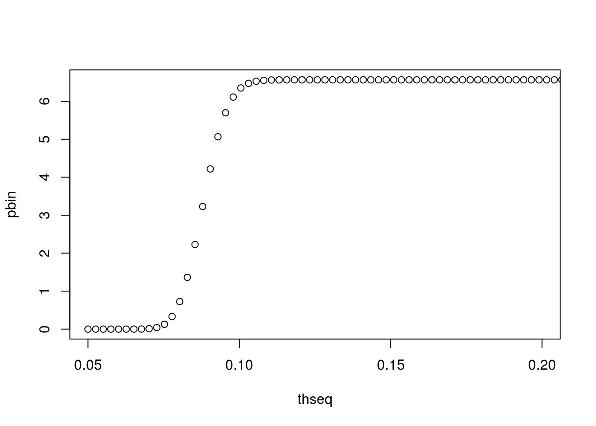

Chapter 3 Simulating a posterior distribution
library(mvtnorm)3.1 Regression with Gibbs sampling
b.update <- function(y, sinv){
if(length(sinv) == 1){
sx <- crossprod(x) * sinv
sy <- crossprod(x, y) * sinv
}
if(length(sinv) > 1){
ss <- t(x) %*% sinv
sx <- ss %*% x
sy <- ss %*% y
}
bigv <- solve(sx + vinvert)
smallv <- sy + vinvert %*% bprior
b <- t(rmvnorm(1, bigv %*% smallv, bigv))
b
}
v.update <- function(y, rinverse){
if(length(rinverse) == 1){
sx <- crossprod((y - x %*% b))
}
if(length(rinverse) > 1){
sx <- t(y - x %*% b) %*% rinverse %*% (y - x %*% b)
}
u1 <- s1 + 0.5 * n
u2 <- s2 + 0.5 * sx
1 / rgamma(1, u1, u2)
}3.2 A nonlinear model
n <- 100
light <- runif(n, 0, 1) # covariate vector
th0 <- 0.1 # theta
z <- light / (th0 + light)
x <- cbind(rep(1, n), z) # n by 2 design matrix
b0 <- 12 # regression parameters
b1 <- 40
beta <- matrix(c(b0, b1), 2, 1)
sig <- 25
y <- matrix(rnorm(n, x %*% beta, sqrt(sig)), n, 1) # response vector
# plot(x[,2], y)ngibbs <- 10000
thgibbs <- rep(0.1, ngibbs)
th <- 0.1
x[,2] <- light/(th + light)
bgibbs <- matrix(0, nrow = ngibbs, ncol = 2)
sgibbs <- rep(1, ngibbs)
sg <- 1
thseq <- seq(0.05, 0.3, length = 100)
tmat <- matrix(rep(thseq, each = n), nrow = n, byrow = FALSE)
lmat <- matrix(rep(light, each = 100), nrow = n, byrow = TRUE)
zmat <- lmat / (lmat + tmat)
ymat <- matrix(rep(y, each = 100), nrow = n, byrow = TRUE)bprior <- as.vector(c(0, 0))
vinvert <- solve(diag(1000, 2))
ppart <- vinvert %*% bprior
s1 <- 0.1
s2 <- 0.1for(g in 1:ngibbs){
b <- b.update(y, 1 / sg)
sg <- v.update(y, 1)
mmat <- b[1] + b[2] * zmat
plik <- apply(dnorm(ymat, mmat, sqrt(sg), log = TRUE), 2, sum)
pseq <- exp(plik - max(plik))
pbin <- cumsum(pseq)
zp <- runif(1, pbin[1], pbin[100])
thgibbs[b] <- thseq[findInterval(zp, pbin)]
x[,2] <- light / (th + light)
bgibbs[g,] <- b
sgibbs[g] <- sg
th <- thgibbs[g]
}
plot(thseq, pbin, xlim = c(0.05, 0.2))